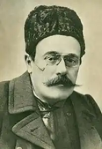

(30.01.1852 — 09.07.1912)
Румунський письменник, драматург.
Караджале народився в родині дрібного чиновника. До того як стати професійним письменником, він був суфлером, коректором, актором, переписувачем і одночасно навчався на юридичному факультеті Бухарестського університету. Згодом був учителем в ліцеї, шкільним інспектором і директором театру. творчість У 1873 році Караджале дебютував як журналіст, публікував нариси і фейлетони. Разом з Антоном Бакалбаша створив і випускав журнал "Moftul romîn" ( "Румунський дурниця"). Караджале належать одні з кращих з написаних румунською мовою драматичних творів. Його комедії "Погана ніч", "Втрачене лист", "Пан Леоніда перед обличчям реакції" і "В дні карнавалу" написані з великим талантом і тонкою спостережливістю; виведені в них типи, незважаючи на відому шаржування, відображають моральні принципи того часу і національні сторони характеру і побуту. Відома також трёхактная драма Караджале "Напасть" і кілька новел: "Великодній факел", "Гріх" та інші.